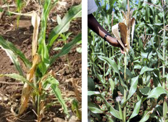
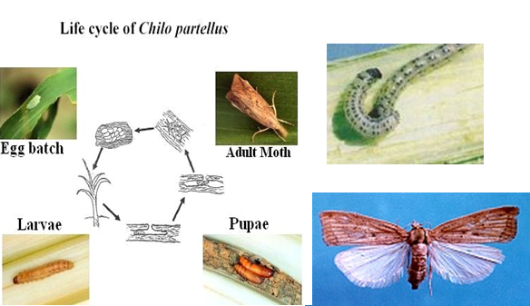

| Home |
| MAIZE |
| 1. Maize Shoot fly |
| 2. Stem Borer |
| 3. Pink Stem Borer |
| 4. Corn worm / Ear worm |
| 5. web worm |
| 6. aphid |
| 7. shoot bug |
| 8. climbing cut worm |
| 9. ash weevil |
| 10. phadka grasshopper |
| 11. leafhopper |
| questions |
| download notes |
PESTS OF MAIZE :: Major Pests :: Stem Borer
2. Stem borer: Chilo partellus (Crambidae: Lepidoptera)
Distribution and status:
India, Pakistan, Sri Lanka, Indonesia, Iraq, Japan, Uganda, Taiwan, Sudan, Nepal, Bangladesh and Thailand. Damage symptoms: It infests the crop a month after sowing and upto emergence of cobs. Central shoot withering leading to “dead heart” is the typical damage symptom. Bore holes are visible on the stem near the nodes. Young larva crawls and feeds on tender folded leaves causing typical “shot hole” symptom. Affected parts of stem may show internally tunnelling caterpillars. |
 |
Bionomics: The adult moth is medium sized, straw coloured. It lays flat oval eggs in batches on the under surface of leaves near the midribs. The fecundity is about 25 eggs per female.
|  | The incubation period is 2-5 days. The larva is yellowish brown with a brown head which mines the midrib enter the stem and feeds on the internal tissues. The larval period is 28-50 days with 7 instars. It pupates within the stem for 2-15 days. The adult longevity is 2-12 days.
ETL: 10% dead hearts.
|
Management
- Grow resistant cultivars like Him 129, Ganga 4,5,7 and 9, Ganga safed 2, Deccan 101 and 103, Him 123, Ageti, C 1, 3 and 7, Kanchan, Kundan
- Sow lab lab or cowpea as an intercrop to minimise the stem borer damage (Maize : Lablab 4:1).
- Set up light trap till midnight to attract and kill the stemborer moths.
- Mix any one of the following insecticides with sand to make up the total quantity of 50 kg and apply in the leaf whorls - phorate 10 G 8 kg, carbofuran 3 G 17 kg, carbaryl + lindane 4G 20 kg, endosulfan 4 D 10 kg (or) spray endosulfan 35 EC 750 ml (or) carbaryl 50 WP 1 kg (500 L. spray fluid/ha).
- Collect the stubbles after harvest and burn to destroy diapausing borers.